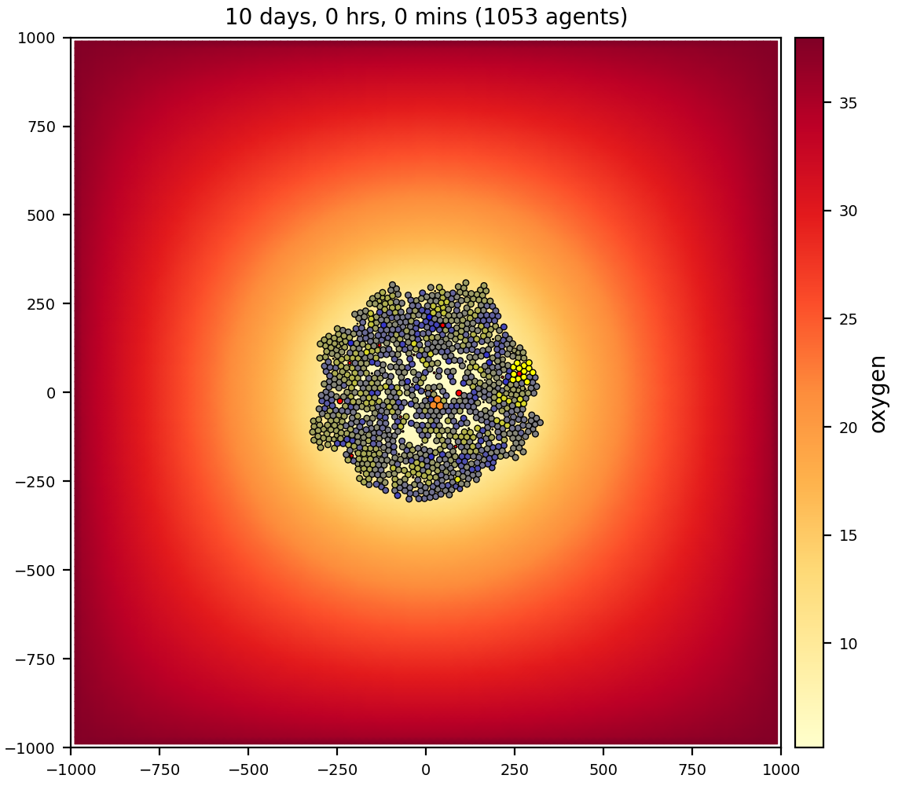
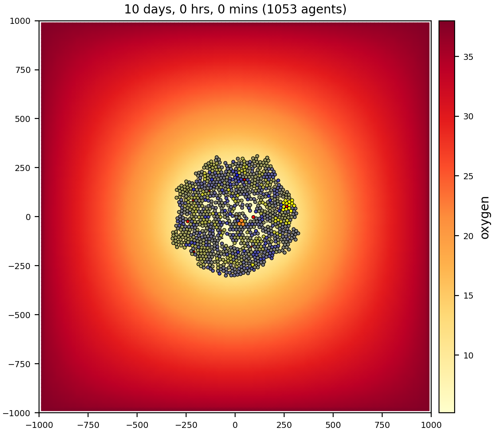

Gallery
Work in progress…
template
A very simple model that has 1 cell type (“default”) and 1 (unused) substrate (“substrate”). The number of initial cells (=5) are specified as a User Parameter. The simulation time is 5 days and results are output every hour. This cell type has a phenotype that includes:
cell cycle resulting in proliferation
cell death
default adhesion and repulsion (mechanics)
no motility
no secretion
biorobots


{kind=link}
3 cell/agent types: director, cargo, and worker
2 substrates (signals): director, cargo
workers (red) pick up and deliver cargo (blue) to directors (green), using chemotaxis to signals
cancer biorobots
Similar to the biorobots sample, but now delivering a drug to treat a tumor. Therapy (cargo and worker cells) appears at 7 days, after the tumor has grown in size.

{kind=link}
{kind=link}


In the video, we are selecting different substrates to plot in the Studio.
3 cell types: cancer, cargo, and worker
3 substrates: oxygen, chemoattractant, therapeutic
heterogeneity
A growing tumor that experiences cell death as oxygen is depleted. Cancer cells (from .svg output) are color-coded in C++. Live cells are green, but shaded by an oncoprotein value. Apoptotic cells are red; necrotic are brown. Note in the images with 2 colorbars, the Studio can color cells’ custom variables (scalars) with a continuous colormap, e.g., oncoprotein, using the “full” (.mat, not .svg) output files.
 

{kind=link}
{kind=link}


1 cell type: cancer
1 substrate: oxygen
virus-macrophage
Virus particles diffuse through the microenvironment, are uptaken by cells, replicate within cells, and trigger lytic death after reaching a threshold. Lysed cells release their virus particles to further diffuse through the environment. Macrophages move by random migration, test for contact with cells, and ingest / phagocytose cells based upon their viral load. Macrophages degrade their internalized viral particles.

Showing the uptake rate of virus for epi cells.


It goes fast, but part way through the video, we first plot the virus (substrate) then the interferon.
2 cell types: epithelial cell, macrophage
2 substrates: virus, interferon
interaction
Complex interaction between multiple cell types and signals. Refer to the custom C++ phenotype functions https://github.com/MathCancer/PhysiCell/blob/master/sample_projects/interactions/custom_modules/custom.cpp

{kind=link}

7 cell types: bacteria, blood vessel, stem, differentiated, macrophage, CD8+ T cell, neutrophil
5 substrates: resource, toxin, quorum, pro-inflammatory, debris
worm
A sample project that shows advanced interaction testing and contact testing. (However, this functionality pre-dated the ability to do so in XML, so it is all performed in custom.cpp). Individual cells aggregate based on chemotaxis towards a secreted quorum factor and test for contacts. Cells can form a maximum of n (default: 2) attachments with the built-in spring functions. Cells on the ends (1 attachment) hold a steady expression of a differentiation function (head). This factor is exchanged between interior cells (2 attachments) to model juxtacrine signaling, using a contact function. End cells determine if they are a head or a tail based by comparing their expression with their linked neighbor. This introduces asymmmetry that allows the “worms” to crawl directionally. Cells exchange a differentiation factor across their contacts to model juxtacrine signaling. To help support contact interaction modeling, there are search functions to report a vector of Cells that are nearby for use in your contact interactions. The default mechanics function also records a list of all currently (mechanically) interacting cells in state.neighbors.

1 cell type: worm
1 substrate: signal